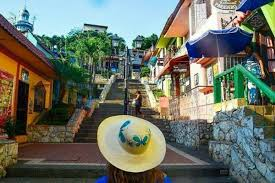

Disfrute de una estadía confortable y accesible en el Hotel Andy, ubicado estratégicamente en el
centro de Guayaquil, a solo pasos de la vibrante vida urbana y atracciones emblemáticas.
Podra disfrutar de diferentes lugares turisticos y de entretenimiento nocturno.
Atracciones cercanas
Imagen referencial
Atraccion
Malecon 2000

Barrio las Peñas
Malecon 2000
Podra recorrer el Malecon 2000 que esta ubicado a unas pocas cuadras.
El Malecón 2000 es más que un simple paseo marítimo, es un símbolo de Guayaquil y
un testimonio de su historia y evolución. Este lugar marcó el origen de la ciudad, desde este punto se
extendió el progreso urbano y desempeñó un rol fundamental en su evolución y enriquecimiento estético.
Barrio las Peñas
El barrio Las Peñas es un lugar emblemático de la ciudad de Guayaquil, Ecuador.
Es reconocido por su estilo arquitectónico colonial y es el lugar donde nació la ciudad.
Se encuentra ubicado en las faldas del Cerro Santa Ana, y su nombre se debe a la cantidad de
peñascos que poseía el cerro cuando los españoles se asentaron allí en el siglo XVI.